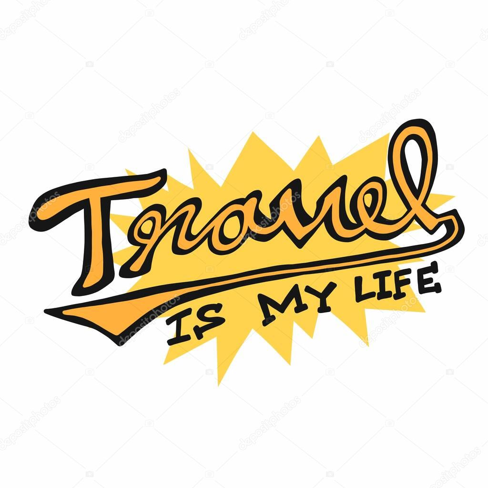

This is my personal portfolio website.
I put in information about me here.
If you are interested,please do save this as a bookmark and keep visiting my page
About Me
Hey der everybody !!!. I am Vishwas V. Currently pursuing Masters in Computer science from University of Texas at Dallas. I am into intelligent systems specialization and in love in coding. I regularly participate in competitive coding and also have a decent experience with web development. I am a Machine learning enthusiat and have worked on various real life case studies. You guys can take a look at my projects by either visiting my linked in profile or by cliking on the projects on the navigation section of this page.
Early life:
I was born and brought up in Bangalore , India . My father Venkatram is a practicing attorney in India and my mom Asha V works as a Logistics specialist in HPE(Hewlett Packard Enterprise). I am the youngest among my siblings so I was always pampered and got the best of all . I completed my schooling in Jubilee High School, Bangalore.Was always average in studies and a enthusiastic in sports. Was captain of my school Cricket team and Volley ball team. Also played for Zonal level tournaments. However things changed when I got to the 10th standard and I got a little serious in studies . Was able to finally get a good score in my finals which helped me land in St Josephs Pre University college for boys. Was n love in computers and took up Computer Science as my elective and pretty much learnt my basics of coding there
Graduation:
Getting a good score in my Pre-University helped me to get admissions from New Horizon College foe engineering Bangalore. The love for computer science remained intact and I chose CS as my stream. Learning from some of the best faculties was the best feeling. Here, I got a strong foundation in Computer science and also started participating in hackathons and competitive programming. I was also able to win a few hackathons in college and was elected to be a part of "Scholars hub". Through this medium I also landed an internship when I was in my 2nd year and was able to learn from industry experts. My final year was basically spent on learning a lot of other subjects out of my curriculum. I spent time working on various side projects on Machine learning ad AI. Some of them are listed in my linked in profile (You can navigate from the left side menu). During my final year I got an offer from Cerner Healthcare to work as automation engineer which I accepted and started working there.
Work experience:
Working in cerner for a year and a half was a great learning experience. I was part of the innovation team working on various automation projects.I have also worked on integration with Jenkins and thus contributing towards CI/CD process in Cerner. I also developed a tool called Prefmgr which helped the manual testers to easily set/unset backend preferences. I even worked on a ML case study where I was able to automatically predict a set of tests that should be executed for a release based on the description of the enhancement. I was also awrded the NOTT-award twice for my above and beyond performance.
Projects
Determination of Probability of whether a Project will be approved or not Using Machine Learning Techniques.
The project aims at performing Pre-processing on a highly noisy Textual data with features like "Text Essay", "Project description" etc and Performing Univariate EDA to determine the initial set of important features.Also used state of the art techniques such as PCA and TSNEs for visualization of the data. On these set of features Vectorization techniques like BOW,TFIDF,Avg W2V were used to vectorize the textual data. Various supervised ML techiques were then used to train and develop a model that could classify a given project(query point) into approved/not approved intelligently.
Preference Manager
Enabled easy handling of scheduling&non-scheduling preferences reducing efforts to set and unset preferences. Used Java ,Jdbc,HTML,Servlets to create a web application. Reduced Time for setting preferences from 10mins to 30seconds
Automatic Testcase selection for defect fixes using ML.
Used supervised Machine learning to predict test cases that should be run for every release. Enabled integration with Jenkins to allow CI/CD to the fullest level.
Classification of Mass detected in Mammogram into Benign/Malignant.
Classified the Mass detected in Mammogram into Benign/Malignant based on it's dimensions using Supervised ML Techniques. Algorithms used: Decision trees,SVM,Naive Bayes and also applied Kfold cross validation to improve the accuracy.
Contact Information
- Email:- vxv190045@utdallas.edu
- Phone:- +91-7892128570
Lets Take a sneak peek into my hobbies!!!!!
1.Travel!!! Yeah love travelling on my Motorbike!!
Click on below pics to see my travel pictures
2. Yes I do Sing!!!
Click on the below image to see one of my Singing videos